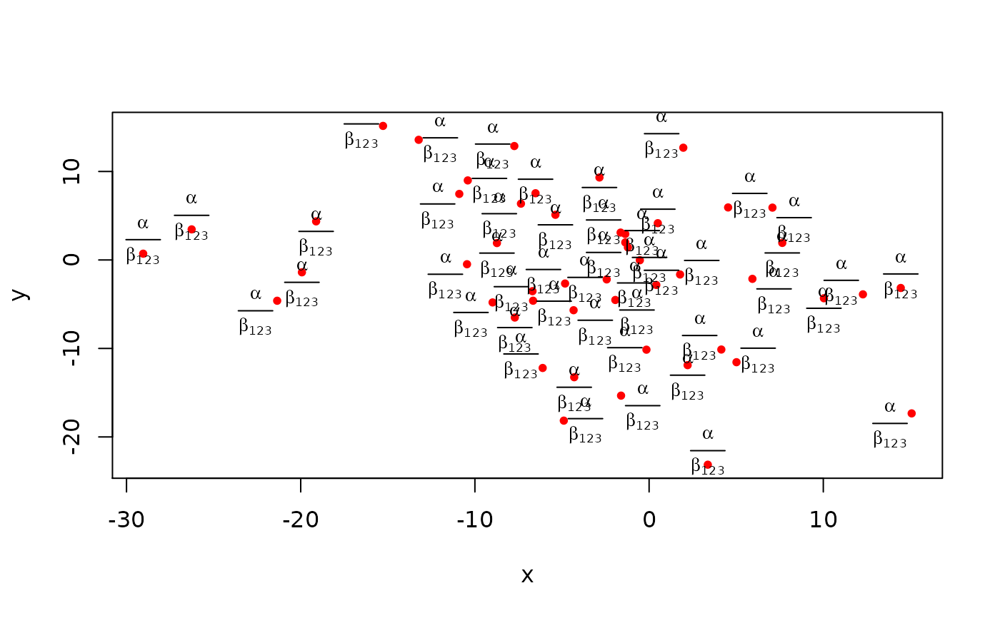

pointLabelBase.RdUse optimization routines to find good locations for point labels without overlaps.
pointLabel(x, y = NULL, labels = seq(along = x), cex = 1, method = c("SANN", "GA"), allowSmallOverlap = FALSE, trace = FALSE, doPlot = TRUE, ...)
| x, y | as with |
|---|---|
| labels | as with |
| cex | numeric character expansion factor as with |
| method | the optimization method, either “SANN” for simulated annealing (the default) or “GA” for a genetic algorithm. |
| allowSmallOverlap | logical; if |
| trace | logical; if |
| doPlot | logical; if |
| … | arguments passed along to |
Eight positions are candidates for label placement, either horizontally, vertically, or diagonally offset from the points. The default position for labels is the top right diagonal relative to the point (considered the preferred label position).
With the default settings, simulating annealing solves faster than the genetic algorithm. It is an open question as to which settles into a global optimum the best (both algorithms have parameters that may be tweaked).
The label positioning problem is NP-hard (nondeterministic polynomial-time hard). Placement becomes difficult and slows considerably with large numbers of points. This function places all labels, whether overlaps occur or not. Some placement algorithms remove labels that overlap.
Note that only cex is used to calculate string width and
height (using strwidth and strheight), so passing a
different font may corrupt the label dimensions. You could get around
this by adjusting the font parameters with par prior to running
this function.
An xy list giving the x and y positions of the
label as would be placed by text(xy, labels).
http://en.wikipedia.org/wiki/Automatic_label_placement
http://i11www.iti.uni-karlsruhe.de/map-labeling/bibliography/
http://www.eecs.harvard.edu/~shieber/Projects/Carto/carto.html
http://www.szoraster.com/Cartography/PracticalExperience.htm
The genetic algorithm code was adapted from the python code at
http://meta.wikimedia.org/wiki/Map_generator.
The simulated annealing code follows the algorithm and guidelines in:
Jon Christensen, Joe Marks, and Stuart Shieber. Placing text labels on maps and diagrams. In Paul Heckbert, editor, Graphics Gems IV, pages 497-504. Academic Press, Boston, MA, 1994. http://www.eecs.harvard.edu/~shieber/Biblio/Papers/jc.label.pdf
text, thigmophobe.labels
in package plotrix
